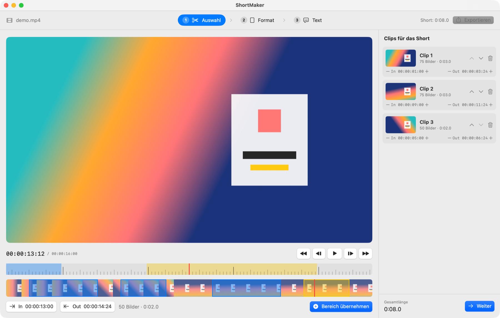
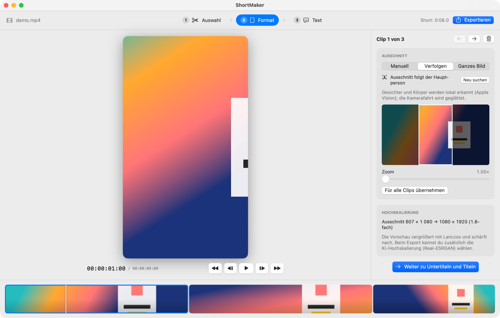
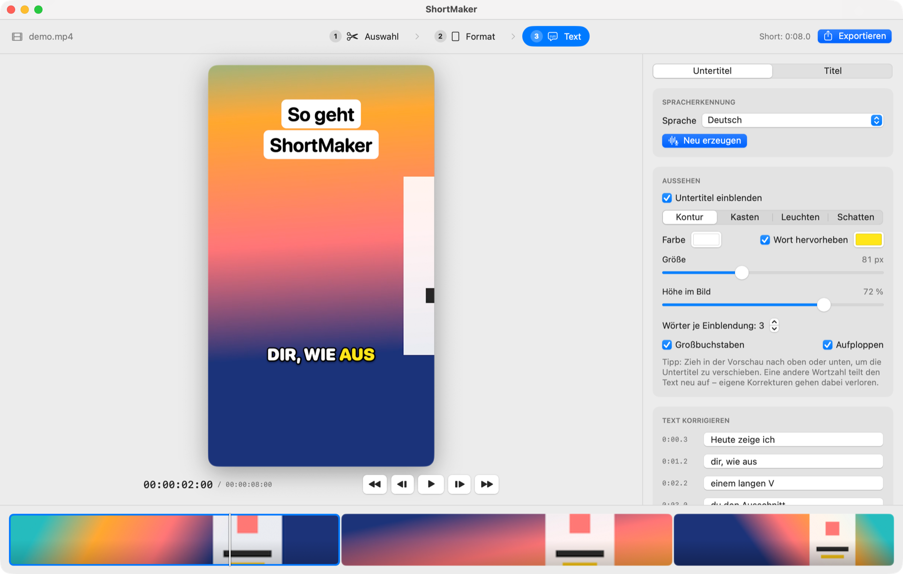
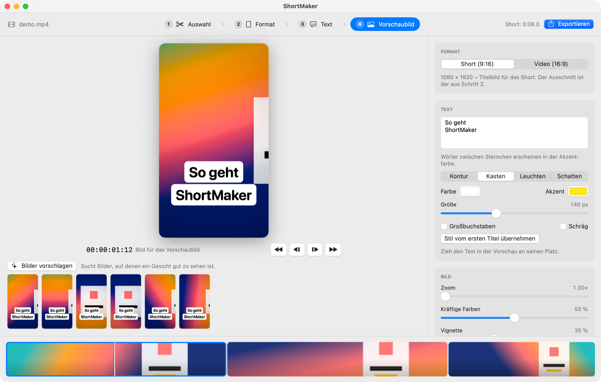

Vier Schritte zum Short
Jeder Schritt hat eine eigene Ansicht. Du kannst jederzeit zurück und etwas ändern.
1Auswahl
Video laden, zur Stelle fahren, mit I und O Anfang und Ende setzen, mit ↩ übernehmen. Die Pfeiltasten und das Feinrad fahren Bild für Bild; Anfang und Ende jedes Clips lassen sich nachträglich bildweise nachstellen.

2Format
Die Clips stehen als 9:16-Zeitleiste hintereinander. Für jeden Clip legst du fest, was zu sehen ist: Ausschnitt von Hand, automatische Verfolgung der Hauptperson oder das ganze Bild mit unscharfem Hintergrund. Der Ausschnitt wird auf 1080 × 1920 hochskaliert.

3Text
Whisper erzeugt die Untertitel automatisch – mit Wort-Zeitstempeln, sodass das gerade gesprochene Wort hervorgehoben wird. Dazu eigene Titel in vier Stilen, frei im Bild platzierbar.

4Vorschaubild
Aus demselben Material und im selben Stil entsteht das Titelbild – als 9:16 für das Short oder 16:9 für das lange Video. ShortMaker schlägt Bilder vor, auf denen ein Gesicht gut zu sehen ist; Wörter zwischen *Sternchen* bekommen die Akzentfarbe. Dazu kräftigere Farben, Vignette, Abdunklung hinter dem Text und auf Wunsch KI-Schärfe.

Was drin ist
Bildgenauer Schnitt
Clips werden in ganzen Bildern gespeichert und exakt so zusammengesetzt – kein Verrutschen um ein Bild.
Personen verfolgen
Apple Vision erkennt Gesichter und Körper; der Ausschnitt folgt der Hauptperson mit geglätteter Kamerafahrt.
Hochskalierung
Vorschau mit Lanczos und Nachschärfen; beim Export auf Wunsch Real-ESRGAN für sichtbar mehr Detail.
Untertitel mit Whisper
Large-v3 turbo, lokal über Core ML. Wenige Wörter je Einblendung, aktuelles Wort farbig, Text korrigierbar, SRT-Export.
Titel im Social-Media-Stil
Kontur, Kasten, Leuchten oder Schatten – Farbe, Größe, Position und Einblendzeit frei wählbar.
Vorschaubild
Passendes Titelbild in 9:16 oder 16:9 – mit Bildvorschlägen nach Gesichtsqualität (Apple Vision), Akzentwörtern und KI-Schärfe.
Ganzes Bild
Wenn nichts abgeschnitten werden darf: das 16:9-Bild mittig, dahinter dasselbe Bild unscharf als Füllung.
Lokal
Dein Video verlässt den Mac nicht. Nur das Whisper-Modell wird beim ersten Gebrauch einmalig geladen.
| Aufgabe | Modell | Hinweis |
|---|---|---|
| Untertitel | Whisper large-v3 turbo über WhisperKit | ca. 630 MB, einmaliger Download |
| Hochskalieren | Real-ESRGAN x4v3 (Core ML) | in der App enthalten, nur beim Export |
| Personen verfolgen | Apple Vision | Teil von macOS |
Selbst bauen
Es genügen die Command Line Tools – Xcode ist nicht nötig.